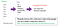

Unknown natural language and AI
The Massai's Experiment

Given that we have a huge base of recorded voice conversations made in a foreign language that we know nothing about. a language that we don't understand that may be is spoken in Africa in a Massai tribe far into the jungle. Given that we have enough recorded materials that can let us tell that we have almost all the words of this unknown language, is a computer able to learn (Translate) this language by only having the knowledge of other natural languages like English, french, german, Arabic, ….

I guess that the first job to be done will be to highlight particular grammatical words like conjunctions using what we already have done with cryptography by making an estimation about the frequency of occurrence of words. Once done we could use this first insight to find structural grammatical patterns of the usages of the remaining unknown words. The outputs of these structural grammatical patterns could allow us to predict which words are more likely verbs, nouns, or adjectives. Remember that what we have and know about this language that we want our computer to understand is recorded conversations, not images or written content, a huge base of vocal conversations that likely embed 90% or more of the vocabulary of this unknown language. Will we be able with Artificial intelligence, machine learning, probability, statistics, natural language processing, semantics, mathematics, or whatever knowledge in our disposal, to break the code of this unknown language with computers and understand it.
Is it possible?
If, yes go try it because I am.